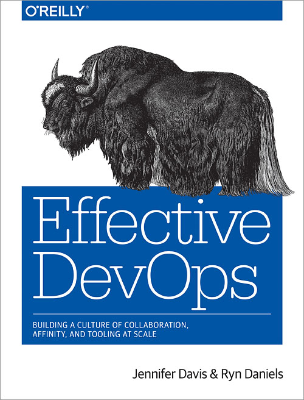
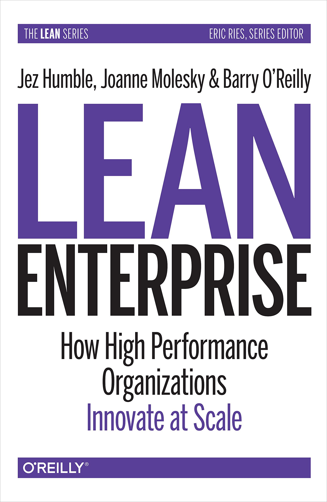
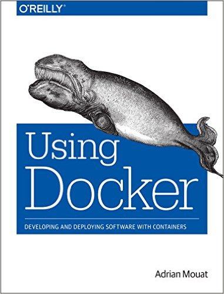

Bienvenidos!
Bienvenidos al curso de Despliegue Continuo de Sistemas de Software.
Para obtener mejores resultados de este curso, utilice todas las oportunidades que tenga para interactuar con los demás participantes del curso.
Demos inicio al curso presentándonos y conociéndonos, escriba un mensaje en la sección de comentarios con los siguientes puntos:
- Cuál es el resultado esperado del curso?
- Díganos de su persona, en qué trabaja? como se relaciona su trabajo diario con el tema de Despliegue Continuo?
- Nota: No escriba nada que no crea pertinente para un foro público
Cuando haya escrito un mensaje con los datos mencionados, tómese un tiempo para navegar los comentarios de otros participantes, respondiendo e interactuando con ellos si así lo prefiere.
En lo restante de esta sección, veremos cómo el Despliegue Continuo se dió en la industria del software, su uso actual y su gran utilidad para entregar sistemas de software de forma rápida a los usuarios finales. Revisaremos un poco sobre los fundamentos en los que se basa Despliegue Continuo, y posteriormente nos pondremos "manos a la obra" con ejemplos reales.
Recursos adicionales
Durante el curso será necesario revisar diferentes fuentes, a continuación se listan los recursos en los que se basa la asignatura, tome en cuenta que su lectura y referencia no es obligatoria, pero sirven como documentos de apoyo durante los diferentes temas que veremos:

Effective DevOps, 2016. Davis, Daniels.

Lean Enterprise, 2015. Humble, Jez.
